Steering Columns · 13-02-11b
Steering Column
Cougar, Mustang
Removal
-
Disconnect the negative battery cable.
-
Disconnect the transmission control rods and the two nuts retaining the flex coupling to the steering shaft.
On a tilt column, remove only one bolt retaining the flex coupling to the shaft.
-
Remove the four screws in the toe plate.
-
Disconnect the electrical quick couplers for the column electrical leads.
-
Remove the three screws from the upper column attaching bracket A (Fig. 4). Drop the column from the instrument panel and remove it from the vehicle.
Installation
-
Place the column in the vehicle and insert the steering shaft through the hole in the dash panel. Insert the steering shaft into the flex coupling. Raise the upper column over the rearmost studs on bracket C. Loosely attach the two retaining nuts. Center the column shift tube to the steering shaft.
Tilt Column. Insert a .15-inch diameter rod between the fabric and the flange. Torque the one bolt coupling to the shaft (20-37 ft-lb).
Fixed Column. Insert a 1/4-inch diameter rod between the fabric and the flange. Torque the two nuts between the coupling to the shaft (10-22 ft-lb).
-
Loosen the two bolts holding bracket B to bracket C.
-
Align the upper column and torque the two retaining nuts 13-27 ft-lb.
-
Align the toe plate to the holes in the dash panel and secure the 4 screws in the following order:
- a. Torque the lower outboard screw to 5-15 ft-lb.
- b. Torque the upper inboard screw to 5-15 ft-lb.
- c. Torque the remaining two screws to 5-15 ft-lb.
-
Install the one remaining nut holding bracket A to bracket B and torque to 13-27 ft-lb.
-
Torque the two bracket B nuts to bracket C 13-27 ft-lb.
-
Remove the 1/4-inch diameter rod from the flex coupling.
-
Attach the transmission control rods, lock rod, and negative battery cable.
-
Adjust the transmission shift linkage.
Maverick
Removal
- Disconnect the battery cable from the negative post.
- Disconnect the transmission shift linkage at the lower end of the column.
- Disconnect the two bolts that secure the flex coupling to the steering gear.
- Remove the two screws attach- ing the ignition switch to the package shelf
- Remove the one screw at the center and the two bolts (each side) attaching the package shelf to the dash. Remove the package shelf.
- Remove the steering wheel from the steering shaft with tool T67L-3600-A. Then, remove the tool from the steering wheel. Do not use a knock-off type steering wheel puller or strike the end of the steering shaft with a hammer. Striking the puller or shaft will damage the bearing or the collapsible column.
- Disconnect the turn signal wires and the neutral switch (if so equipped).
- Remove the four bolts attaching the toe plate to the dash (Fig. 5).
- Remove the two nuts retaining the column retaining clamp to the toe plate.
- Remove the one bolt attaching the retaining clamp to the column.
- Remove the two nuts retaining the shroud and the three nuts retaining the column upper bracket to the brake pedal support bracket.
- Remove the column from the vehicle.
- Remaining bracketry may be removed from column or vehicle as required.
Installation
-
Position the column in the vehicle making sure the column engages the flex coupling splines with no interference.
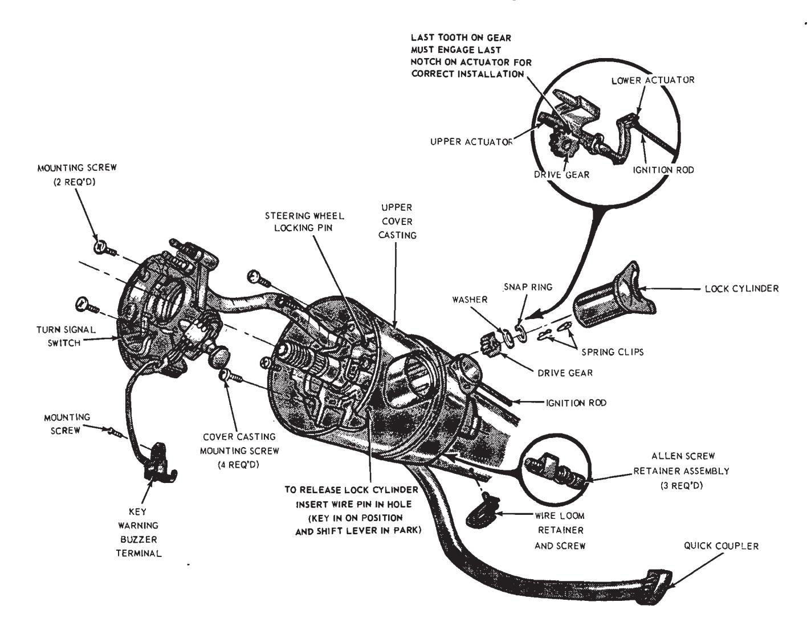
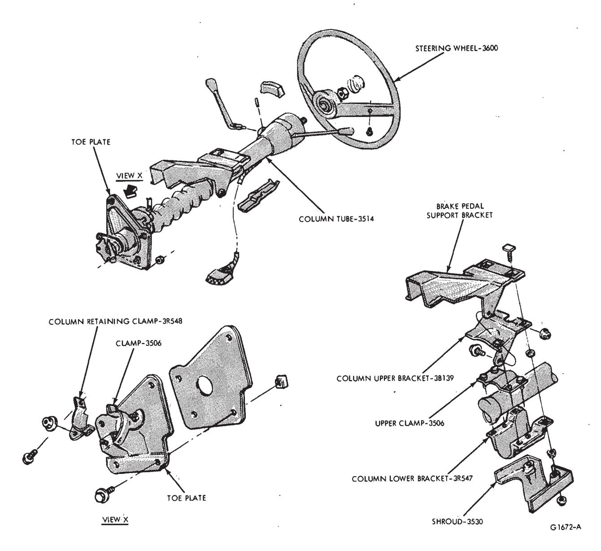
Fig. 5 — Steering Column Installation — Maverick -
Install the three nuts attaching the column upper bracket to the brake pedal support bracket. Leave the nuts loose (Fig. 5).
-
Loosely install the four bolts attaching the toe plate to the dash.
-
Loosely install the bolt attacing the retaining clamp to the column.
-
Install the two nuts retaining the column retaining clamp to the toe plate. Leave the nuts loose.
-
Tighten the retaining clamp to the column bracket.
-
Tighten the four bolts retaining the toe plate to the dash.
-
Tighten the three nuts retaining the column upper bracket to the brake pedal support bracket.
-
Tighten all six nuts, two at a time, that secure the column upper bracket and upper clamp to the col- - umn lower bracket.
-
Position the shroud and tighten the two nuts retaining it.
-
Connect the turn signal and neutral switches.
-
Reinstall the package shelf with one screw at the center and two bolts each side. One bolt on the left hand side retains the air duct control.
-
Connect the ignition switch.
-
Install the steering wheel and torque to 30-40 ft-lbs.
-
Connect the two bolts retaining the flex coupling to the steering gear.
-
Connect and adjust the shift linkage.
-
Connect the battery cable to the negative post.
-
Check the operation of the switches.
Falcon
Removal
- Disconnect the battery cable from the negative post.
- Disconnect the turn signal switch wires at the connector.
- Disconnect the neutral start switch (with automatic transmission) and back-up light switch wires from the switches.
- Disconnect the transmission control rod(s) from the lever(s) at the lower end of the column.
- Remove the bolt that secures the flex coupling to the steering gear (Fig. 6).
- Remove the nuts and bolts that secure the column retainer and seal at the toe plate.
- Disconnect the nuts that secure the column upper and lower brackets to the brake pedal support bracket and the dash panel.
- Lift the column from the vehicle.
Installation
- Position the steering column in the vehicle. Make sure that the wheels are in the straight ahead position and that the steering wheel spokes are in a horizontal position when the flex coupling engages the input shaft splines.
- Install but do not tighten the nuts that secure the column upper and lower brackets to the brake pedal support bracket and the dash panel. Make certain the column is properly positioned relative to the flex coupling input shaft connection.
- Install and tighten the flex coupling-to-steering gear attaching bolt.
- Tighten the nuts at the brake pedal support bracket and the dash panel.
- Install and tighten the nuts and bolts that secure the column retainer and seal at the toe plate.
- Connect the transmission control rod(s) to the lever(s) at the lower end of the column. Adjust the shift linkage.
- age.
- Connect the neutral start switch (if so equipped) and back-up light switch to their respective terminals.
- Connect the turn signal switch wires.
- Connect the battery cable to the negative post.
- Check the operation of the switches.
Fairlane, Montego
Removal
-
Disconnect the negative battery cable.
-
Disconnect the transmission control lever rods.
-
Remove the two nuts retaining the flex coupling to the steering shaft.
-
Remove the four screws from the toe plate assembly (Fig. 7). Loosen the clamp bolt.
-
Remove the instrument panel trim cover retained by two screws.
-
Disconnect the electrical quick couplers at the base of the column.
-
Remove the three nuts from the upper column attaching bracket A.
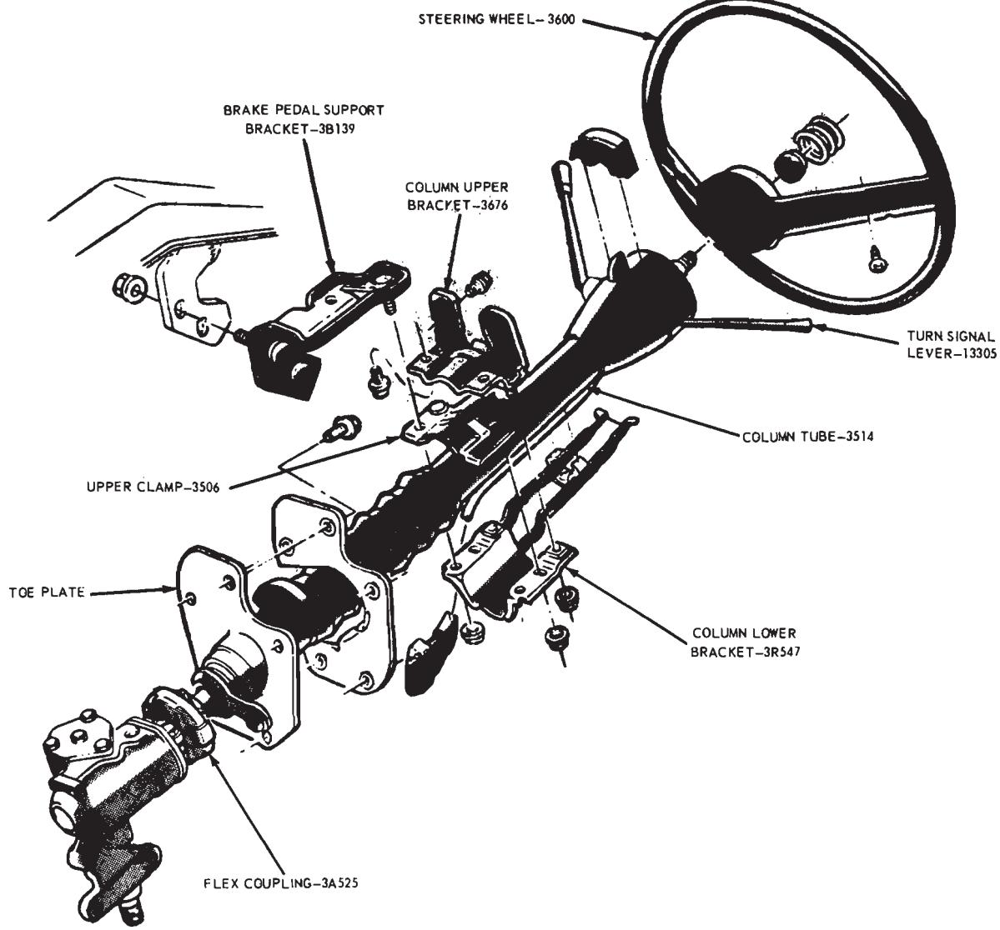
Fig. 6 — Steering Column Installation — FalconLet the column drop down and lift it out of the dash panel.
Installation
- Install the steering column in the vehicle and lower the steering shaft through the hole in the dash panel.
- Align the steering shaft with the flex coupling and insert a 1/4-inch diameter rod between the fabric and the flange and tighten the two retaining nuts (10-22 ft-lb).
- Raise the upper column to contact the two studs in the support bracket C and the one stud in bracket B. Align the column and secure with three nuts. Torque to 13-27 ft-lb.
- Push the toe plate assembly against the dash panel. Be sure the - column shift tube and steering shaft are centered. Secure the four screws (5-15 ft-lb). Tighten the clamp bolt to 5-15 ft-lb.
- Connect the electrical quick couplers at the base of the steering column. Replace the instrument panel trim cover.
- Remove the 1/4-inch diameter rod from the flex coupling. Install and adjust the transmission control lever rods and lock rod (if applicable).
- Connect the negative battery cable.
Ford, Mercury, Meteor
Removal
-
Disconnect the negative battery cable
-
Disconnect the transmission control rods.
-
Remove the steering shaft-to-flex coupling connection (one bolt on tilt columns, two bolts on fixed columns).
-
Remove the four nuts (Fig. 8) retaining the toe plate to the dash panel (engine compartment side).
-
From inside the vehicle remove the one additional retaining nut on the toe plate.
-
Disconnect all electrical connections to the steering column.
-
Remove the upper column trim shrouds.
-
Disconnect the PRND21 cable (automatic transmission columns) from the outer tube (1 screw) and the socket pin (cable loop).
-
Remove the three nuts which se- cure the column to the brake support extension.
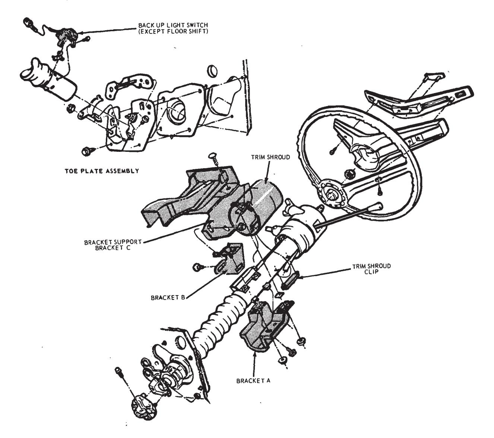
Fig. 7 — Fixed Steering Column Installation — Fairlane, Montego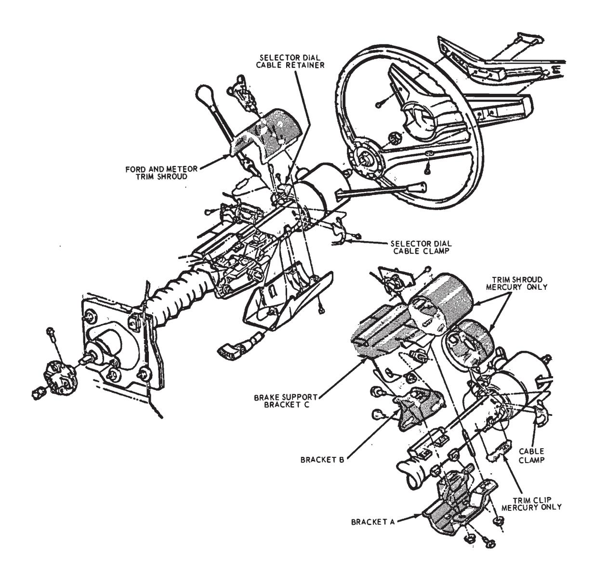
Fig. 8 — Typical Steering Column Installation — Ford, Mercury, Meteor -
Remove the column from inside the vehicle.
Installation
-
Remove the upper column bracket B and loosely attach it to bracket A with one nut. The bracket must be free to slide relative to the slot in bracket A.
-
Loosen the column opening cover clamp and slide the cover rearward.
-
Insert the steering column through the dash panel opening and engage the steering shaft to the flex coupling. Torque to specification (tilt column, one bolt 20-37 ft-lb; fixed column, two bolts 10-22 ft-lb).
- A .15-inch diameter rod should be placed between the fabric and the flange on tilt columns and a 1/4-inch diameter U-shaped rod on fixed columns to prevent distortion.
-
Raise the column over the two studs in the brake support bracket C and install the nuts finger tight. Adjust the column so that it is centered in the instrument panel and torque the nuts 13-27 ft-lb.
-
Column bracket B should be brought flush to the extension lip on the brake support bracket C and the retaining nut to bracket A torque to 13-27 ft-lb.
-
Secure bracket B to the brake support bracket C extension lip with one bolt and one bolt/nut assembly. Torque to 13-27 ft-lb.
-
Push the steering column open- ing cover D against the dash panel. Center the column shift tube to the steering shaft to prevent grounding and secure the cover in the following order:
- a. Tighten the cover nut-to-stud to the inside of the dash panel 96-156 in-lb.
- b. Tighten the four cover retaining nuts to the engine side of the dash panel 96-156 in-lb.
- c. Tighten or check for the proper torque on the clamp bolt at the base of the column 60-144 in-lb.
-
Remove the flex coupling spacer.
-
Adjust the transmission control indicator-loop cable over the retainer on the socket casting. Position the selector lever in drive (D) position. Tighten the cable bracket to the outer tube with the screw to nest the screw to the bracket. Loosen the screw and rotate the bracket to align the indicator over the drive (D) position of the selector lens. Retighten the cable bracket screw.
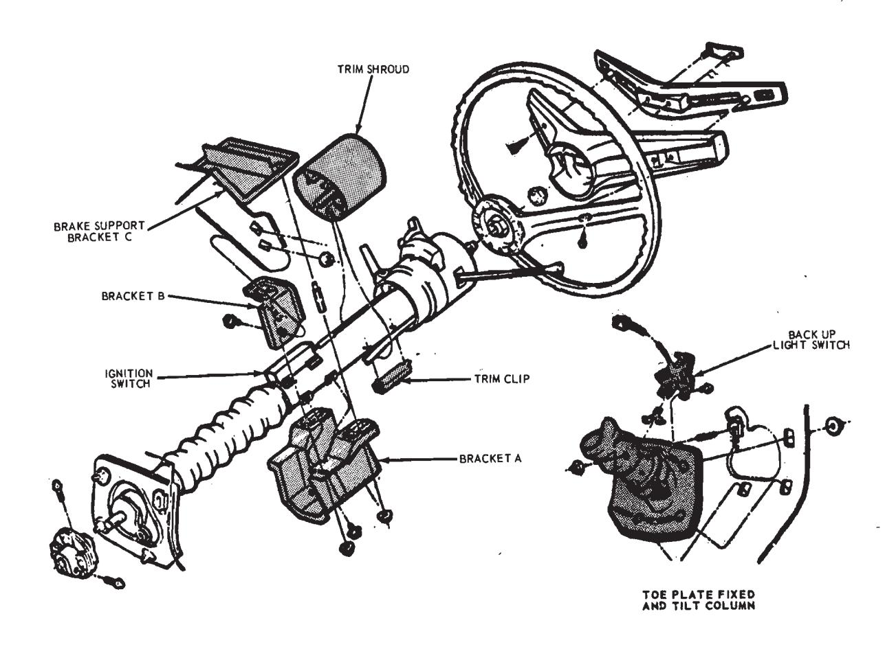
Fig. 9 — Fixed Steering Column Installation — Continental Mark III, Thunderbird — (Tilt Column Similar) -
Reconnect all electrical connections to the steering column.
-
Install the trim shrouds.
Ford. Place the upper shroud in position on the steering column. Hook the lower shroud into column bracket A and rotate it against the column. Make sure the index pin fits into the hole on the outer tube. Secure with two screws.
Mercury-Tilt Column. Position the inner and outer shrouds around the column and snap the tabs into the clip. Make sure the inner shroud rib pins are in the holes on the outer tube. Push the outer shroud forward against the instrument panel.
Mercury-Fixed Column. Position the shroud around the column and snap the tabs into the clip. Push it forward against the instrument panel.
-
Reconnect the transmission control rods, lock rod (if applicable), and connect the battery negative cable. Adjust the transmission controls.
Thunderbird, Continental Mark III
- Disconnect the negative battery
- Disconnect the transmission control rods.
- Remove the retaining bolt from the flex coupling-to-steering shaft.
- Disconnect the column electrical connectors.
- Remove the steering column trim cover from the instrument panel.
- Remove the four nuts (Fig. 9) holding the toe plate to the dash panel.
- Remove the three nuts holding bracket A to bracket B and C.
- Lift the column out of the dash panel and remove from the vehicle.
Installation
-
Place the column in the vehicle and insert the steering shaft through the opening in the dash panel.
-
Align the steering shaft with the flex coupling and insert. Install a .15-inch diameter rod between the fabric and flange.
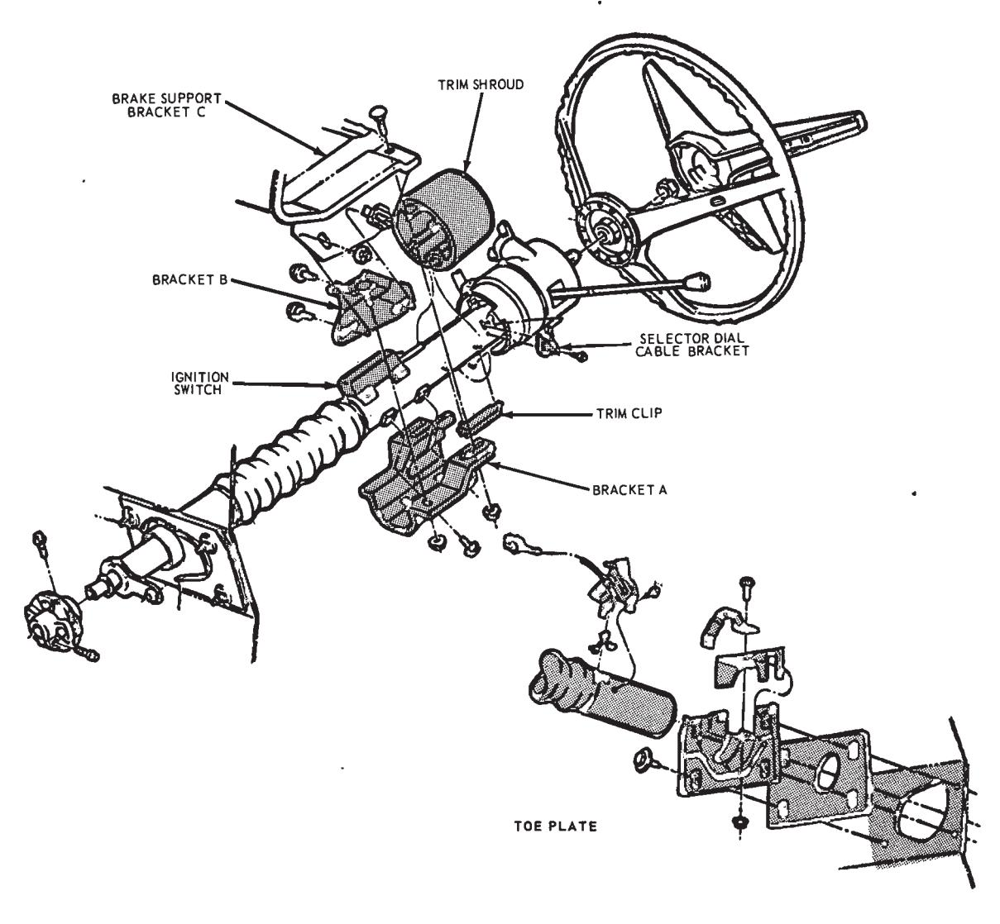
Fig. 10 — Fixed Steering Column Installation — Lincoln Continental — (Tilt Column Similar) -
Loosen the two bolt/nut assemblies on bracket B to allow the bracket to move in the slotted portion of bracket C.
-
Raise the steering column over the studs from bracket C and B. Align the column and tighten the three nuts to 13-27 ft-lb.
-
Jam the toe plate tightly against the dash panel. Center the column shift tube to the steering shaft and secure the toe plate with four nuts to 96-156 in-lb. Torque the toe plate clamp nut to 60-144 in-lb.
-
Secure the bracket B nut/bolt assemblies to the extension bracket C to 18-48 ft-lb torque.
-
Reconnect the electrical quick couplers.
-
Install the steering column trim cover.
-
Tighten the flex coupling bolt to the steering shaft to 20-37 ft-lb. Remove the .15-inch diameter rod.
-
Connect the transmission control rods and the negative battery cable. Adjust the shift linkage.
Lincoln Continental
Removal
- Disconnect the negative battery cable.
- Disconnect the transmission control rods.
- Remove the bolt retaining the flex coupling to the steering shaft.
- Remove the four screws retaining the toe plate to the dash panel (Fig. 10).
- Disconnect all column wiring quick couplers.
- Remove the steering column trim cover from the instrument panel.
- Disconnect the transmission selector dial cable from the column and loop it on the socket casting. Allow it to hang free.
- Remove the three retaining nuts holding the upper column retaining bracket A in place.
- Lift the column out of the dash panel and remove from the vehicle.
Installation
-
Place the column in the vehicle and insert the lower end of steering shaft through the dash panel opening.
-
Align the steering shaft with the flex coupling and insert the shaft. Place a .15-inch diameter rod between the fabric and flange.
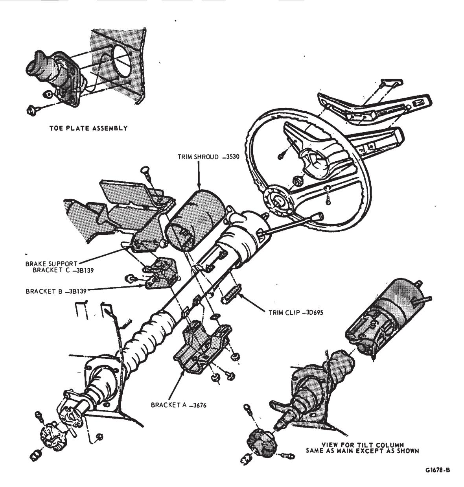
Fig. 11 — Tilt Column Mechanism -
Loosen the bolt and bolt/nut assembly retaining bracket B to the flange of bracket C.
-
Raise the steering column and slide bracket A over the two studs in the brake support bracket C and the one stud in bracket B. Hold bracket B securely against the extension flange of brake support bracket C. Align the upper column and secure the three nuts to attach bracket A to bracket B and C. Torque to 13-27 ft-lb.
-
Jam the toe plate assembly against the dash panel. Center the column shift tube to the steering shaft and secure the toe plate with four screw/washer assemblies 5-15 ft-lb.
-
Secure the retaining bolt and bolt/nut assembly on bracket B to bracket C with 13-27 ft-lb torque.
-
Reinstall the shift selector dial cable by looping the cable over the retainer on the socket casting and position the gear shift lever in drive (D) position. Tighten the cable bracket to the steering column outer tube to align the screw and bracket. Loosen the screw and rotate the cable bracket around the outer tube until the selector pointer is aligned with letter D in the instrument cluster and retighten the screw.
-
Replace the electrical wiring quick couplers.
-
Replace the steering column trim cover and trim shrouds using a new retainer, if necessary.
-
Secure the flex coupling bolt - 20-37 ft-lb and remove the .15-inch diameter rod.
-
Connect and adjust the shift
-
Replace the negative battery cable.
Tilt Column Mechanism
-
Disconnect the negative battery terminal.
-
Disconnect the steering shaft at the flex coupling.
-
Remove the steering wheel trim pad, the steering wheel, and the turn signal lever. The steering wheel should be in the full up position.
-
Disconnect the quick coupler for the turn signal wiring at the lower end of the column (Fig. 11).
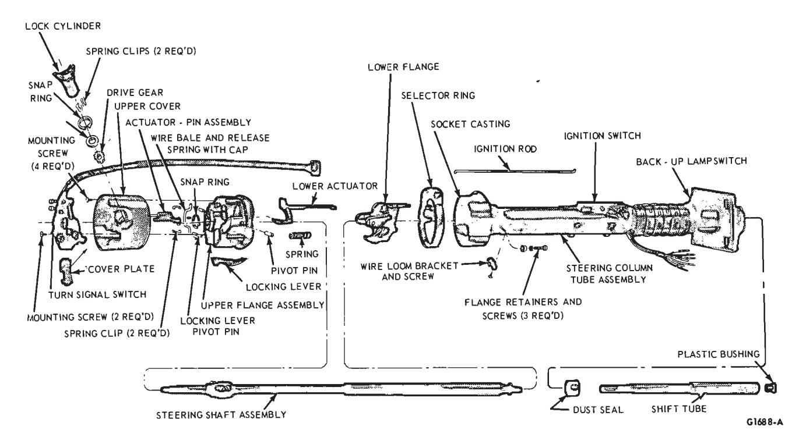
Fig. 12 — Typical Tilt Column Disassembled (Fixed Column Similar) -
Remove the two screws on the turn signal switch. Remove the wire harness retainer screw and clip on the upper column outer tube. Lift the switch over the steering column shaft.
-
Place the gear shift selector in P (park) position and insert a wire pin in the ignition lock hole located between the lock cylinder housing and the warning flasher button on the cover casting.
-
Turn the ignition key to on position, depress the wire pin, and lift out the lock cylinder.
-
Remove the lock cylinder spring clips inside the lock cylinder housing.
-
Using a flat blade screwdriver, insert the blade into the recess in the drive gear at the bottom of the lock cylinder housing. Turn the drive gear three notches in a counterclockwise direction. Remove the snap ring, the washer, and the drive gear (Fig. 11). Note the position of the drive gear to the upper actuator teeth.
-
Remove the four phillips screws on the cover casting and lift it up over the shaft and turn signal switch and remove it. The upper actuator can also be removed at this point.
-
Remove the three screws to allow the selector dial ring to be removed (if applicable). See Fig. 12. If the column has a remote selector dial pointer cable system, remove the cable attachment during the removal of the trim shrouds as described in the next step.
-
Remove the upper column trim shroud(s), the steering column instrument panel trim cover, and the attaching bolts holding the column brackets to the brake support bracket. Allow the column to drop down exposing the ignition switch.
-
Remove the three allen screws holding the lower flange casting to the outer tube. These screws are located under the socket casting on the outer tube.
-
Remove the ignition switch rod connection at the ignition switch. It will probably be necessary to start the flange assembly out of the column to allow enough free play to disconnect the ignition switch rod.
-
Remove the two spring clips holding the wire bale which acts as a release lever for the locking lever. Remove the wire bale (Fig. 13).
-
With a small drift, drive out the pin holding the locking lever. Remove the locking lever and spring. A C-clamp may be used to relieve the tension on the pin during removal if necessary.
-
Remove the steering shaft snap ring.
-
The upper and lower flange castings can now be separated by removing the two pivot pins located in the side of the casting assembly with either tool T65P-3D739-A or tools T70P-3D739-A and T67P-3D739-A.
-
After the upper and lower flange castings are separated it will be possible to remove the lower actuator with the ignition switch rod attached.
-
Removal of the socket casting requires rotating the inner tube and socket casting to expose the casting retaining bolt. Removing the bolt allows the casting to be lifted off the shift tube.
Installation
- Install the socket casting and tighten the retaining bolt.
- Assemble the upper and lower flange castings to the steering shaft including the locking lever, the bale, the ignition switch rod (lower actuator) and the turn signal wire harness. The flange assembly pivot pins should be pressed in place using a C-clamp (Fig. 16).
- Install the steering shaft including the tilt mechanism into the column.
- Hook up the ignition switch rod to the lower actuator and tighten the three allen screws holding the flange assembly to the outer tube. New allen screws must be used each time the unit is assembled to insure that epoxy cement on the screws will bond properly.
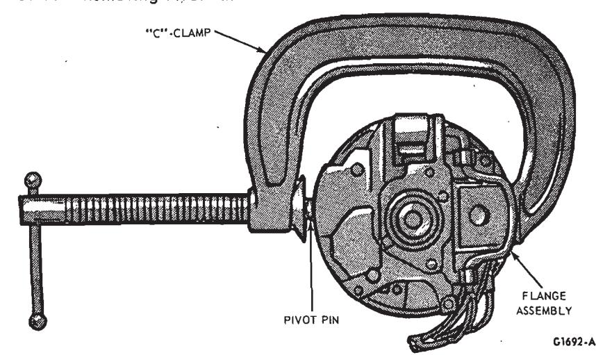
Fig. 16 — Installing Flange Assembly Pivot Pins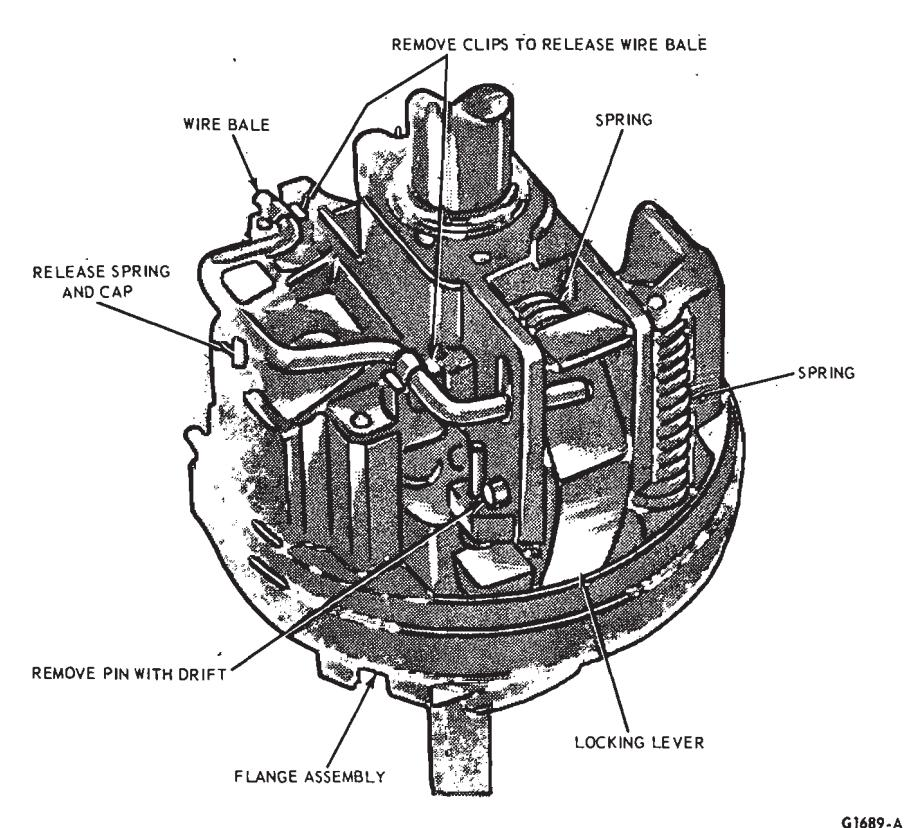
Fig. 13 — Removing Wire Bale and Tilt Locking Lever
- Install the locking mechanism upper actuator (rack) and the outer cover.
- Install the turn signal switch.
- Install the lock cylinder drive gear, washer, snap ring, spring clips, and lock cylinder (Fig. 11). Install the turn signal lever.
- Turn the key to the off position to extend the lock cylinder retaining pin into the flange.
- Adjust the ignition switch.
- Install the column attaching bolts, trim shroud(s), steering wheel and trim pad.